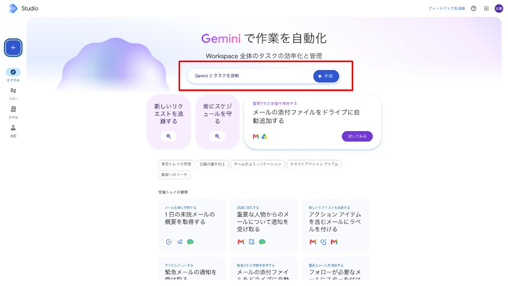
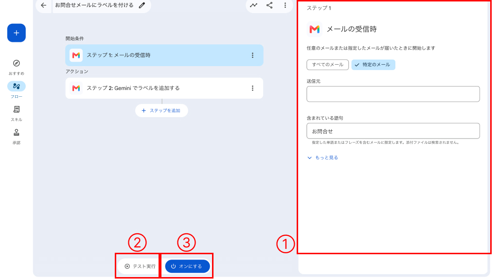
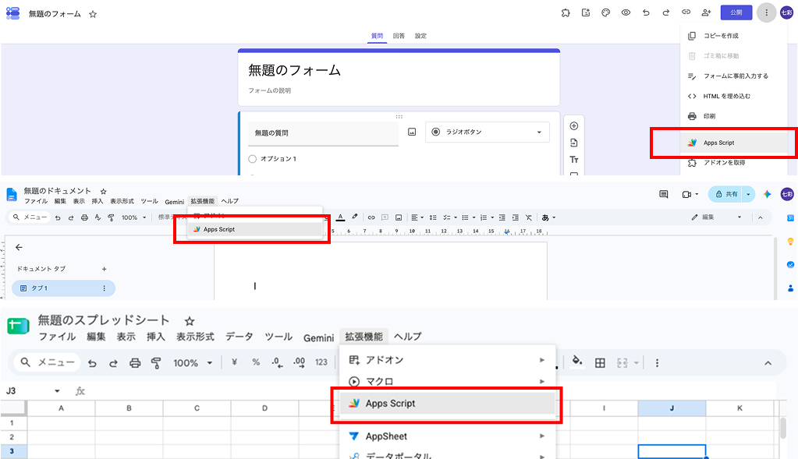
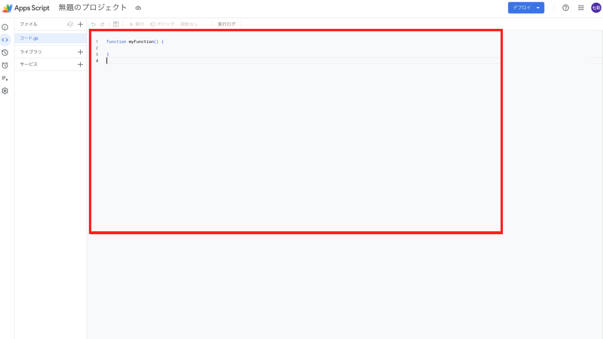

本日挑戦できる自動化の一覧です。あとで1つ選んで、45分以内に実装します。
この3つを書き出せば、AIに渡す設計図になります。
studioとGASの操作方法
コードは書きません。studio.workspace.google.com を開き、下の入力欄に日本語で書くとフローができます。

フローができたら、右側で条件を整え、テストしてからオンにします。

いま開いているファイルから入ります。赤い枠の「Apps Script」です。

コードは自分で書かなくて構いません。Geminiに作ってもらい、赤枠へ貼って保存／実行します。

実装中に権限の確認や注意が表示されても、社内で自分の作業なら想定どおりのことが多いです。落ち着いて中身を見て進めてください。
迷ったら入力しない、が原則です。判断に困る場合は佐藤さんや開発チームへ相談してください。
説明は以上です。ここから制限時間45分で、1つ選んで実装に入ります。
受信したメールの内容や送信者をAIが解析し、重要度や案件別・カテゴリ別に自動でラベル（タグ）を付与します。手動での仕分け作業が不要になり、フォルダ整理の手間を削減できます。
日々届く問い合わせメールを集約・解析し、「どのような質問が多いか」「顧客の課題は何か」などのトレンドを要約して定期報告します。顧客の声を素早く把握し、サービス改善やFAQ作成に活かせます。
会議後の議事録を、指定の NotebookLM ノートへソースとして追加します。あとから決定事項や宿題をノート上で質問できます。
メールで届いた見積書や請求書などの添付ファイルを、指定したGoogleドライブのフォルダへ自動で整理・保存します。ダウンロードの手間を省き、ファイルの紛失や保存忘れを防ぎます。
クライアントとの打合せメモや議事録の文脈を読み取り、お礼・決定事項・次回アクションをまとめたメールの下書きを自動生成します。ゼロから文章を作る時間を短縮し、迅速なフォローを可能にします。
Google Apps Script
回答数が定員に達した、または受付期限を過ぎたタイミングで、Googleフォームの受付を自動で停止します。手動で閉じ忘れる心配がなくなり、先着順の申し込みや期限内の申請を正確に運用できます。
Google Apps Script
各部署や担当者が個別に入力している複数のスプレッドシートのデータを、毎日決まった時間に自動で1つのマスターシートに集約します。月末の手作業でのコピペや、集計ミスを完全に無くすことができます。
Google Apps Script
経費精算や備品購入などの社内申請をGoogleフォームで受け付け、送信と同時に承認者の社内チャット（Google ChatやSlack）へ通知を飛ばします。確認から承認までのタイムラグをなくし、進捗状況もスプレッドシートで自動管理できます。
Google Apps Script
Googleカレンダーの定例予定をトリガーにして、会議の数日前に「前回の決定事項」や「今回のテンプレート」が記載された議事録（Googleドキュメント）を自動作成します。さらに参加者へリンクを自動通知し、事前の記入を促すことで会議時間を短縮します。
Google Apps Script
スプレッドシート上の「タスク管理表」や「提出物リスト」をシステムが毎日チェックし、期日が迫っている、あるいは過ぎているのに「未完了」となっているメンバーにだけ、自動で催促のチャットやメールを送ります。管理者がわざわざ個別に催促する手間が省けます。